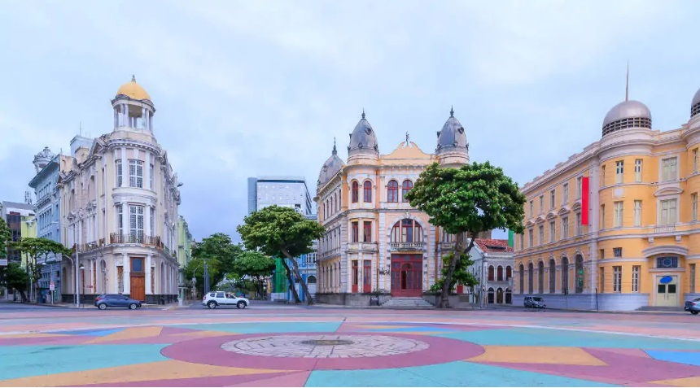

Marco Zero
O Marco Zero no Recife Antigo é um dos pontos turísticos mais importantes para quem deseja conhecer a capital de Pernambuco. Isso porque é um local de importância histórica que conta o nascimento da cidade e possui forte referência cultural. Além disso, o Marco Zero recebe, anualmente, diversas comemorações e manifestações e também é um lugar muito famoso para quem busca eventos como o Carnaval.
Acima, a praça do Marco Zero, em Recife - PB
Ponto exato do Marco zero

Alguns outros locais para visitar no Marco Zero
Parque das Esculturas de Francisco Brennand

Exatamente na frente do Marco Zero, do outro lado do estuário, fica o Parque das Esculturas, uma exposição de mais de 90 (?) obras do escultor e artista plástico pernambucano Francisco Brennand, inaugurado em 2000 para comemorar os 500 anos da chegada dos portugueses ao Brasil. A obra mais famosa é a Torre de Cristal, com 32 metros de altura.
Curtir a vista e o pôr-do-sol no espaço Armazéns do Porto